Monte seu deck, funda criaturas lendárias, prepare armadilhas que viram o jogo e enfrente duelistas do mundo todo numa cidade viva.
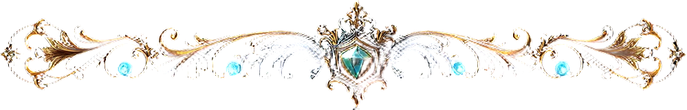
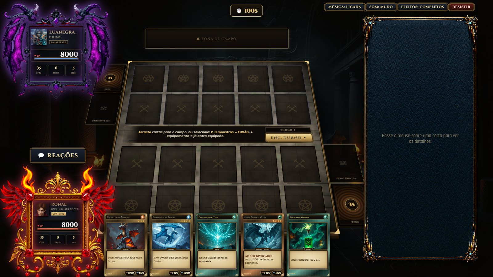
Invoque monstros em ataque, em defesa ou virados para baixo. Junte dois ou três monstros para fundir uma criatura muito mais forte. Esconda armadilhas no campo e destrua o ataque do oponente na hora certa.
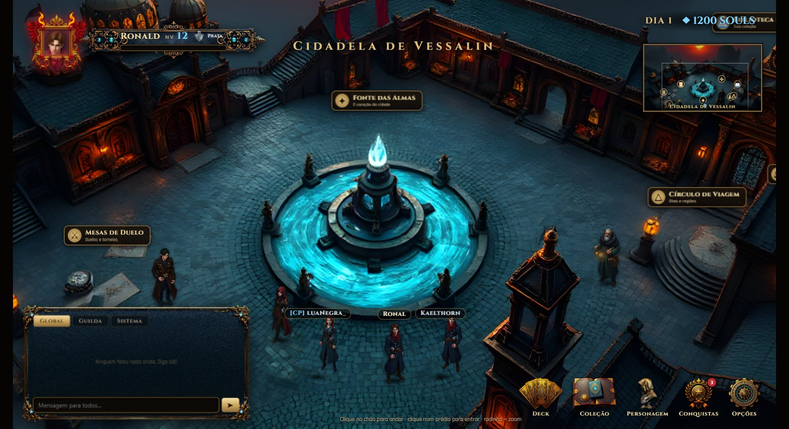
A Cidadela de Vessalin é o coração do jogo. Ande pela praça, veja outros duelistas passando, converse no chat e desafie quem estiver por perto.
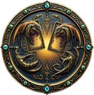
Combine monstros e desbloqueie fusões raras. Monte seu Deck de Fusão e surpreenda.
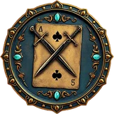
As peças-chave do jogo: anule ataques, destrua invasores e mude o rumo do duelo.
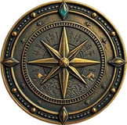
De Morvaneth à Cidadela Celeste de Ossarym: 119 locais, chefes e recompensas.
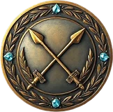
Do Ferro à Antimatéria: suba de rank, ganhe molduras exclusivas e entre no ranking.
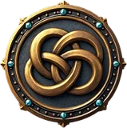
Funde sua guilda, converse, sussurre e desafie seus amigos para um duelo.
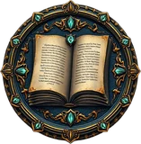
367 cartas pintadas para colecionar, pacotes temáticos, temporadas e conquistas.
Cada carta tem arte pintada à mão digital. Algumas só nascem de fusões.
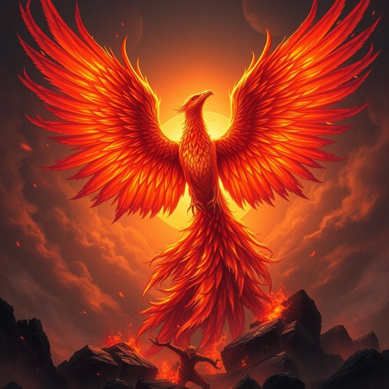
Solkaryn, Fênix Eterna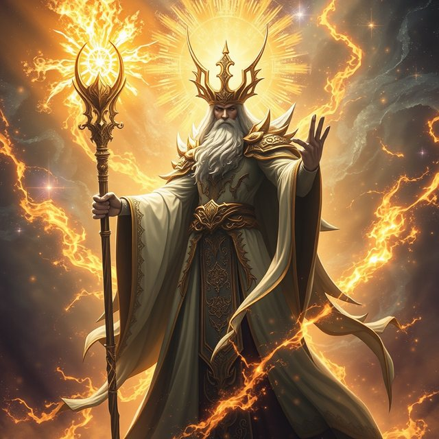
Ozmandel, o Grão-Arcano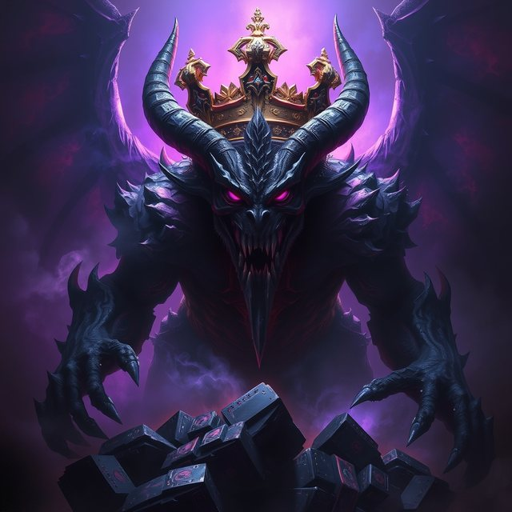
Kharoth, Devorador de Reis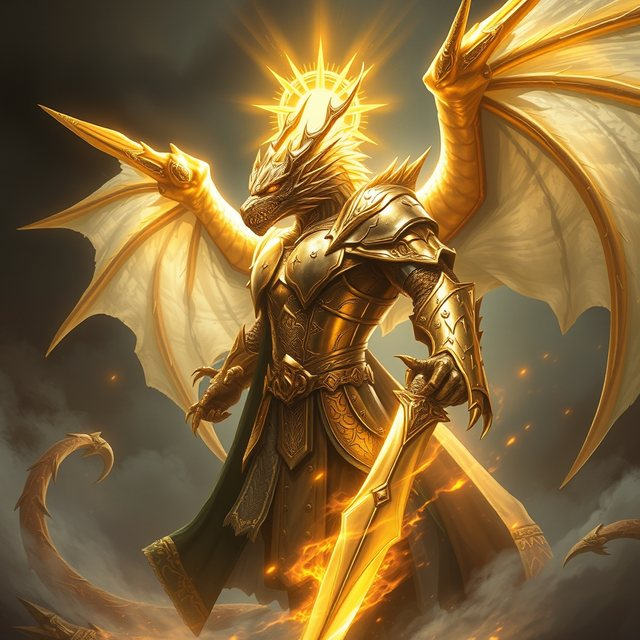
Aurathorn, Lorde-Dragão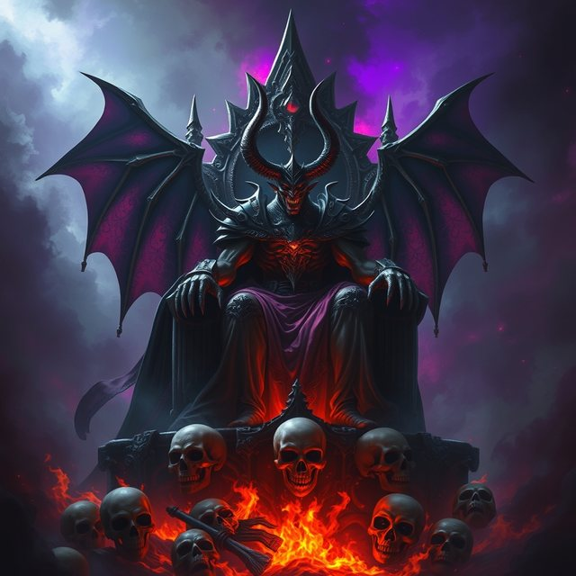
Xal'Gorath, o Imperador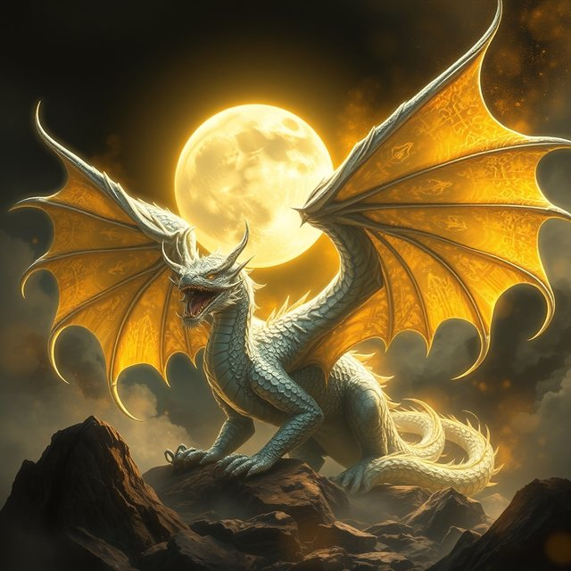
Nythrae, Dragoa da Lua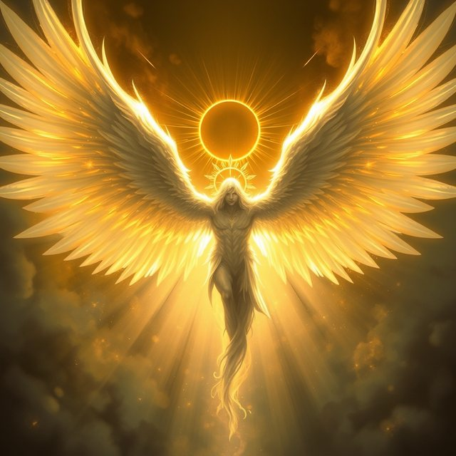
Elyndra Seis-Asas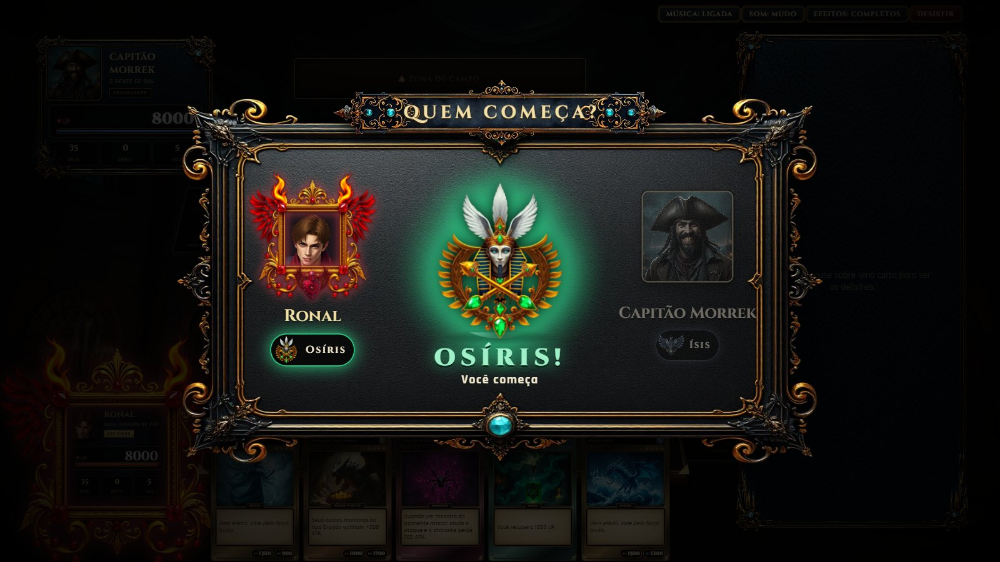
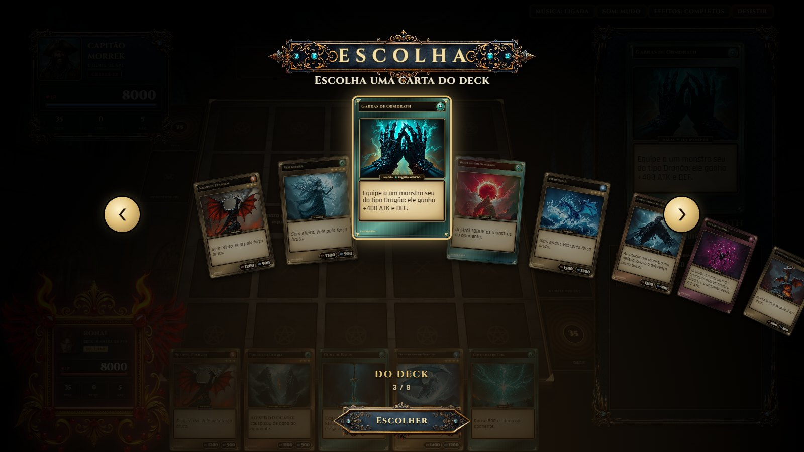
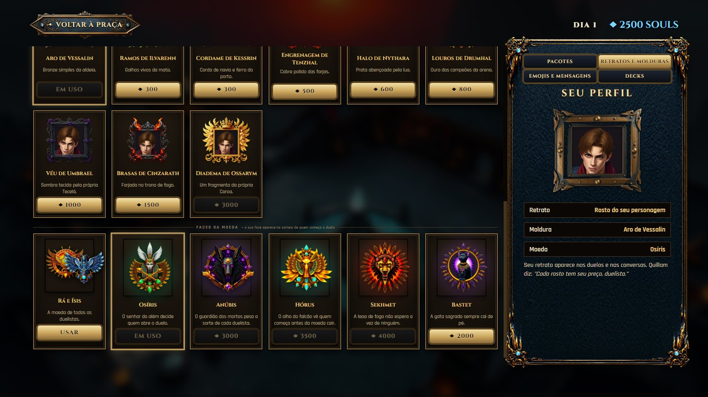
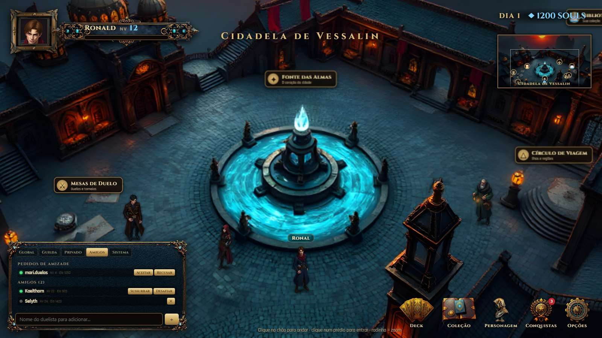
Instale, crie sua conta e entre na Cidadela de Vessalin. O jogo se atualiza sozinho sempre que sai novidade.
⬇ Baixar para WindowsSim. Tudo se conquista jogando: Souls ganhas nos duelos e missões compram pacotes, emblemas e molduras.
Para jogar com outros duelistas, entrar na cidade, no PvP, nas guildas e no chat, sim. O progresso fica salvo na sua conta.
Sim. O jogo se ajusta sozinho a qualquer tela: 720p, 1080p, 2K, 4K e ultrawide.
Selecione dois ou três monstros da mão: se combinarem, nasce uma criatura nova muito mais forte. Fusões raras precisam ser conquistadas antes de usar.
O aviso aparece porque o instalador ainda não tem assinatura digital paga. Clique em “Mais informações” e depois em “Executar assim mesmo”.